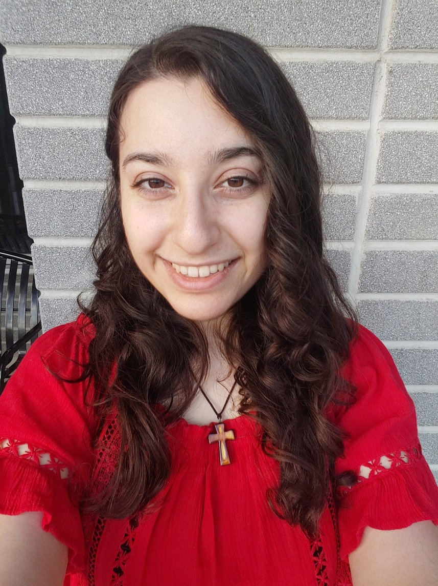

Well Hey There!
I assume you’re here to read all about me? Sarah Murad? Then look no further! I love talking about myself, because I’m an incredibly interesting person
Since I’m so interesting, here is a photo to show how interesting I really am:

pretty interesting huh
Now let’s get into my spectacularly interesting life:
Before George brown I used to be at Sheridan, and studied (in order of appearance):
- Software Development and Network Engineering (stayed 1 year)
- Bachelors of Interaction Design (stayed 1 semester)
I left the first one because I:
- Don’t like math, never been good at math, never will be.
- Coding boring programs is boring (looking at you, java calculators…)
- Network Engineering is a whole bunch of memorization and back-end, thus… boring
I left the second one because:
- The program went extremely fast because of being quite competitive
- Very harsh grading on all fronts and no accommodations or support
- The program coordinator himself said that if I can’t keep up I should withdraw and do a diploma in the subject instead
… so I did! Now I couldn’t be happier! Excuse me for being wholesome, but this program has already given me so much confidence in my abilities, support and encouragement that I wouldn’t trade it for anything! I can’t wait to learn more!
Now as for my interesting hobbies, I’m into:
- Playing video games (Big Nintendo fan)
- Watching anime! (Shout-out to FullMetal Alchemist Brotherhood)
- Singing (Not to brag but I have a youtube cover channel here)
- Biking (in the non-corona times…)
Well… was that interesting enough for a bio?
~ Fin ~